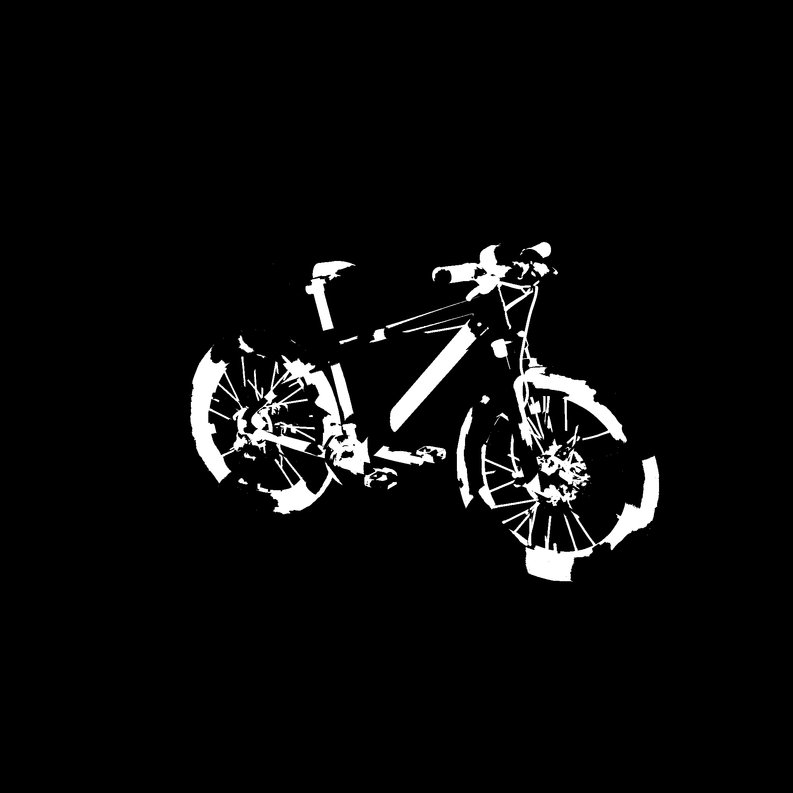
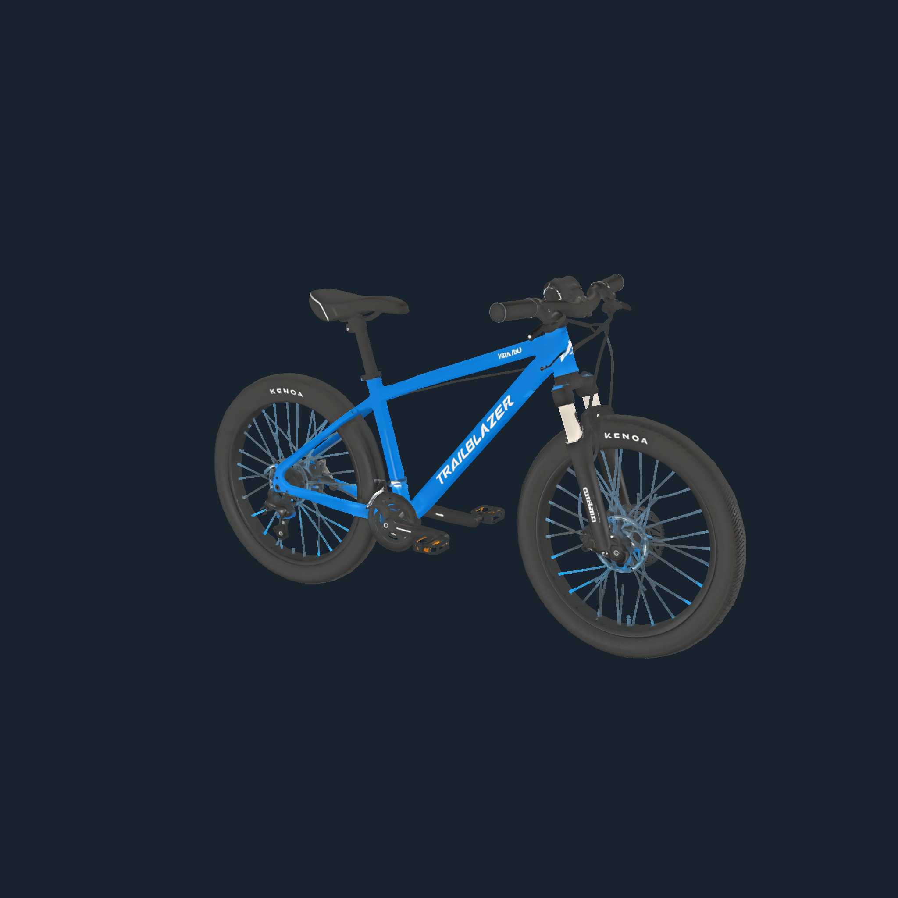
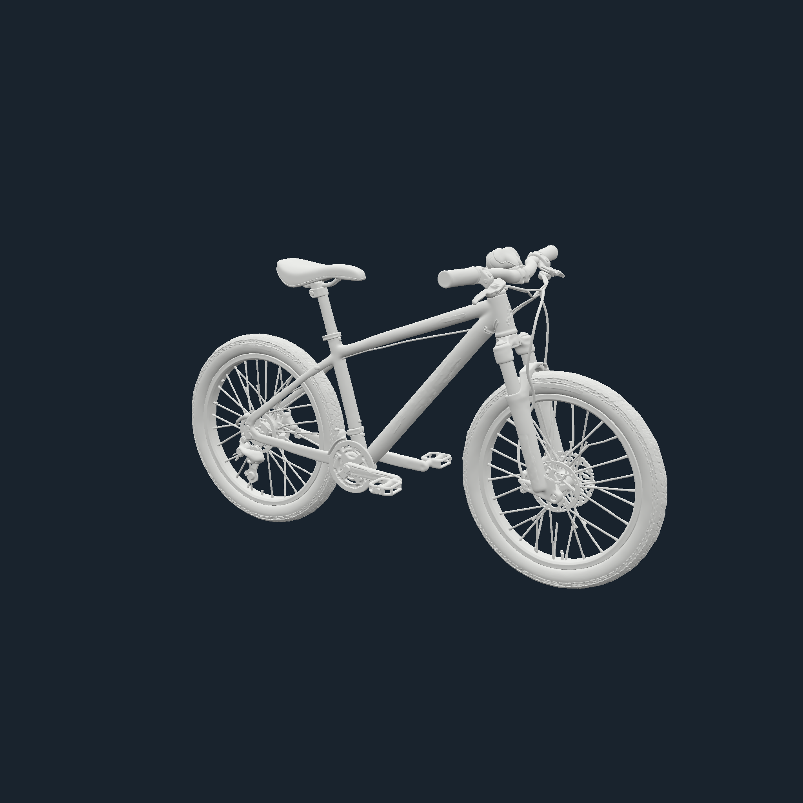

纹理捕获优化 · 本机全屏实测
Bicycle · 1,857,094 triangles · Edge · 2K PNG · 2026-09-29
| 捕获阶段 | 冻结旧版 | 最终版 | 耗时减少 |
|---|
| 作者蒙版 | 801.8 ms | 161.4 ms | −79.9% |
| 当前效果图 | 643.0 ms | 237.6 ms | −63.0% |
| 白模图 | 654.1 ms | 243.7 ms | −62.7% |
24 次完整 RGBA 对照一致。时间从捕获开始至 PNG 就绪，不包含远端生图。
作者蒙版 · 原版 / 最终版


当前效果图 · 原版 / 最终版


白模图 · 原版 / 最终版


1/2/3 已采用；4 仅保留 PNG 缓冲直接转移。倒序编码候选因白模变慢已撤回；完整跳过中间 PNG 编解码未实施。帧间隔和输入延迟原始样本均保留。
完整优化文档 · 捕获原始数据 · 读回原始数据 · 编码原始数据